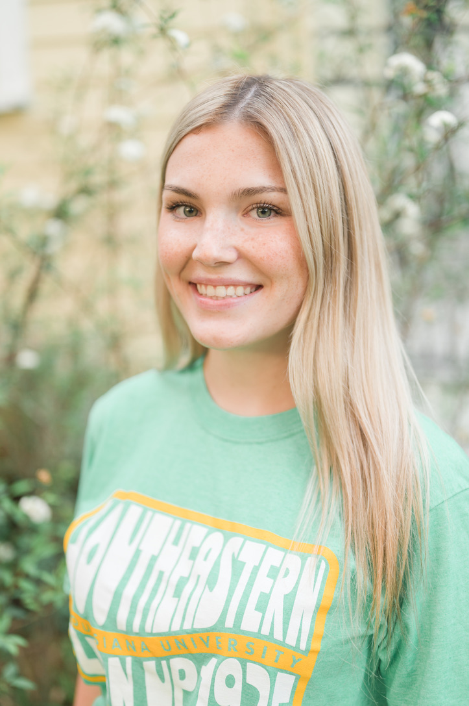

Hello, I'm Ava Lusk
I’m a Graphic Information Technology student who enjoys creating clean, intentional, and visually meaningful designs. I like turning ideas into simple, user-friendly websites that feel modern and easy to navigate.
My focus is on building strong foundations in HTML, CSS, and responsive design while improving my creative problem-solving skills through hands-on projects.
What I Like Working On
- Web design & layout structure
- Clean and minimal UI design
- Creative digital projects
- Learning new design tools